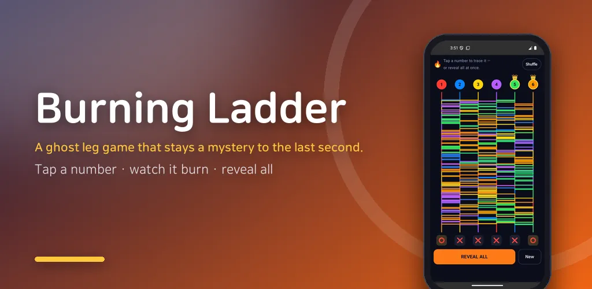
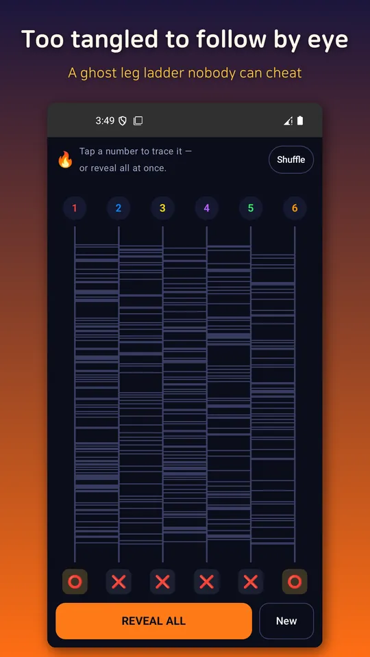
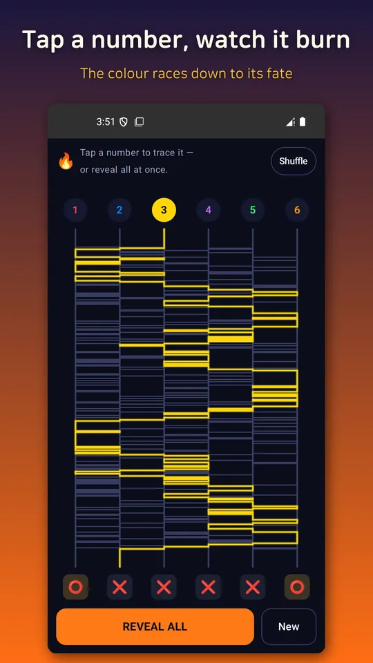
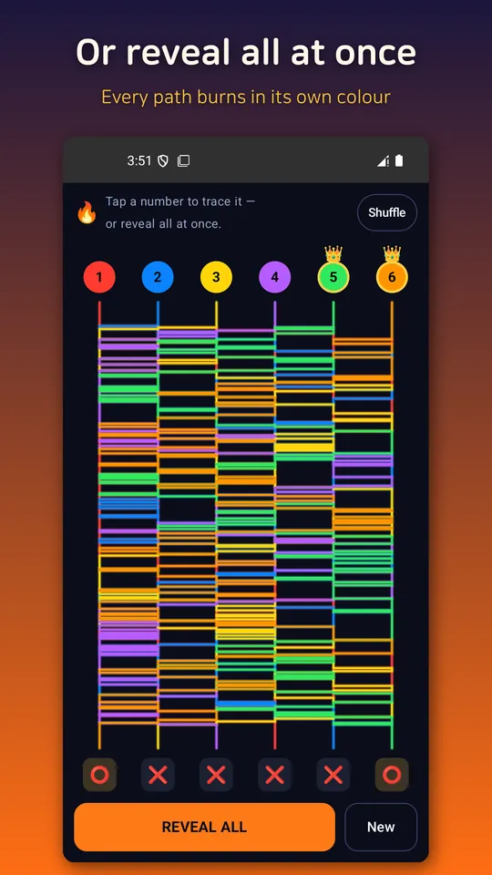
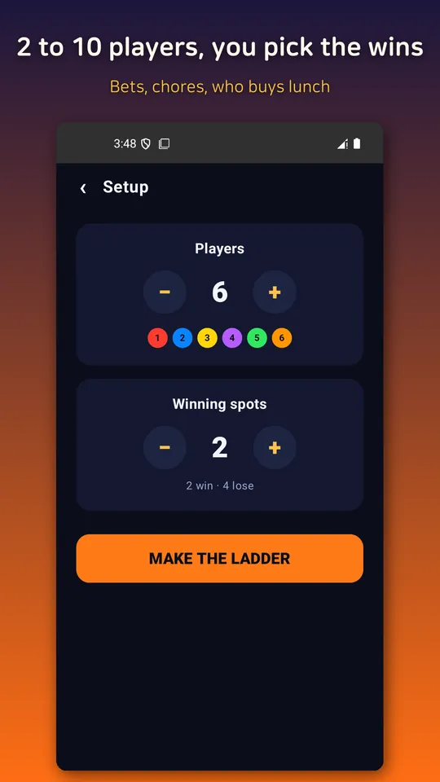

Ghost Leg Ladder: Random Pick
Ghost leg ladder draw for bets, chores and lunch picks. Tangled lines, real luck





About this app
No fun if you can already see the result. This is a ghost leg that actually keeps you guessing.
Most ghost-leg (ladder) apps use lines so simple you can just follow them with your eyes and see the outcome — which is why people cover the screen with their hands. Burning Ladder goes the other way. It deliberately tangles the lines into a wild mess that no one can trace by eye, bringing back the real, unpredictable tension.
🔥 Wick-style burning trace
Tap a number and that line lights up and burns down like a wick, streaking in color all the way to a win (⭕) or a lose (❌). It's the kind of moment that has everyone at the table watching the screen and yelling "please, not me!"
🌈 Reveal All = everyone ignites at once
Hit Reveal All and every player burns down simultaneously, each in a different rainbow color. Up to 10 players — and you won't know who's caught until the very last instant.
⚙️ Just two settings, dead simple
Set the number of players (2–10) and how many winning spots there are. Everything else becomes a lose automatically. No fiddly options — just draw.
✅ A fair draw with nothing hidden
When it's done, every path stays on screen, proving no one tampered with it. It's a pure random draw, so play with peace of mind.
Perfect for moments like
- Deciding penalties or the loser at a party or dinner
- Bets, turn order, and splitting into teams
- Picking where to eat, who buys coffee, or whose turn to clean — a quick random draw
Runs fully offline. No server, no login, no data collection — just fire up a ladder anytime, anywhere.
Android · free with ads · Developer: RealTunaLove · Store listing in 17 languages
Background story: why I built it